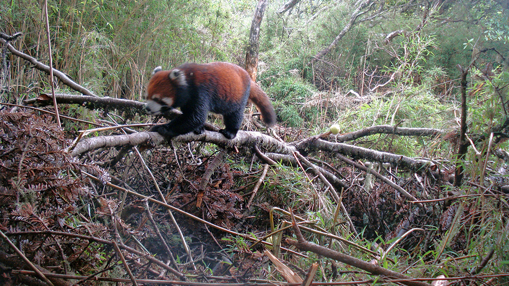

HOW TO GET INVOLVED
There are plenty of ways for you to join the World Wildlife Day celebrations, wherever you are. World
Wildlife Day has been oberved in the in the past by people, groups and authorities around the world
and in various ways. Whether you take part in big events or even the smallest of gatherings, you can
help raise awareness of wildlife and promote conservation and sustainable use!
Here are some of our suggestions for this year's celebrations:
Make sure to announce your event so we can see how World Wildlife Day is being
celebrated
around the world!
Wildlife conservation is an issue that needs attention every day.
The threats weighing on wildlife are often large and complex, so much so individuals might feel
powerless about them. However, every person’s small actions add up to a much larger solution – making
the difference between a species surviving or disappearing forever.
THEY NEED US

We're looking for 4,200 people to create a better tomorrow for vulnerable wildlife and their
habitats
around the world. Will you protect our beautiful planet today?
Please make your Giving Tuesday donation now. Together, we will save precious wildlife, conserve
amazing wild places, and protect the planet for future generations.
YOUR DONATION
$35
$60
$125
$250
$1000
$ Other
DONATE NOW
Thank you for your generous support.